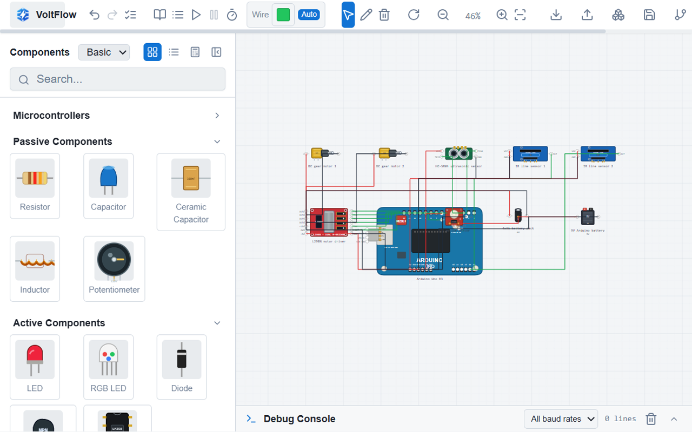
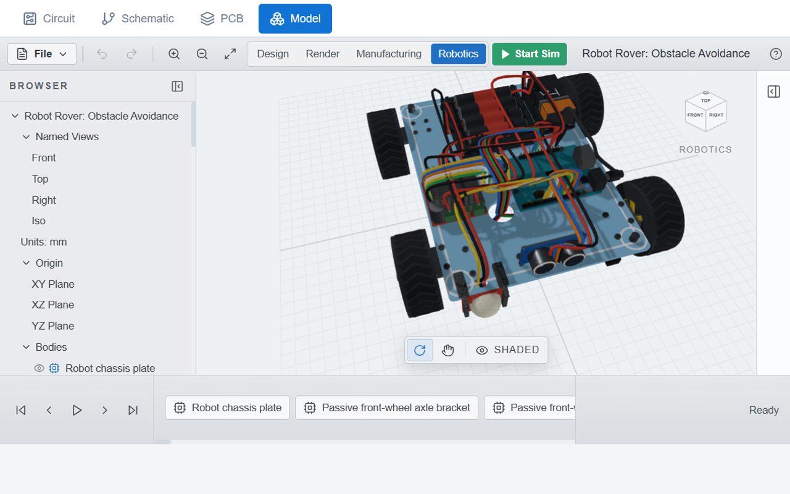
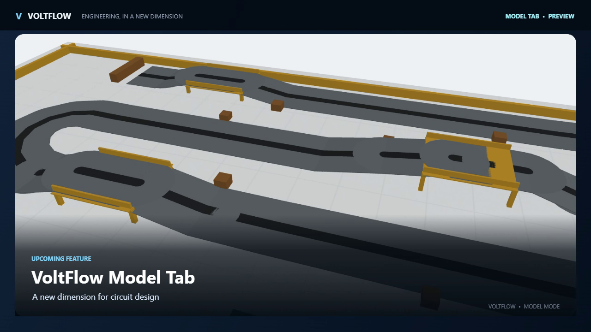

From connected components to a build you can inspect
VoltFlow already gives a project a place to lay out components and trace their electrical connections. The upcoming Model tab adds another perspective: a three-dimensional assembly where the board, sensors, drivetrain, chassis and wiring can be viewed together.
The Robot Rover example makes that shift easy to see. Its Arduino Uno, motor driver, ultrasonic sensor, line sensors, motors, battery and chassis parts form one recognizable build. Orbiting the view reveals how those pieces fit physically, while the circuit remains the reference for their electrical relationships.




Keep the circuit and the physical view connected
A model is most useful when it helps answer practical design questions: where a sensor sits, how the power source reaches the board, and whether a component has room on the chassis. The preview brings those hardware details into the same project story as the circuit sketch, without replacing the wiring view.
The preview reel now transitions from the assembled rover to a live VoltFlow recording with both the rover and obstacle course in view. Bridge heights, obstacles and a curved lane help demonstrate the simulation work underway. The feature is still in development, and its motion and control behavior continue to be refined.
What comes next
The Model tab is an upcoming addition to VoltFlow, not a finished public release. Work is continuing on the project workflow, model controls, component alignment and simulation experience. We will share more when the feature is ready for a broader hands-on preview.
← Back to all articles